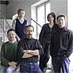
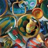

| Keramikgruppe
Grenzhausen
A German ceramics co-operative.

The dynamics of a small group working together in a ceramic studio
can be rewarding and productive.
This
can be seen at its best in the Keramikgruppe Grenzhausen. For the
thirteen years that they have been together so much good work has
been made, both for the development of the artists and for the benefit
of all who see and acquire their work. They seem such a happy group,
and it all happens without pressure or problem, as they go about
their lives, raising families, enjoying all that a positive situation
through their work can provide. I have visited the studio on a number
of occasions and have met various members of the group at different
locations in other countries. There is always good news and friendliness;
and this must be why their work continues to be so good. I wish
them well for future decades while congratulating them on the past
one.
Janet Mansfield, editor Ceramics, Art & Perception.
Susanne
Altzweig makes wheel-thrown functional ware painted with
brightly colored fish, floral and other cuisine-related motifs.
A. was awarded a journeyman’s certificate after an apprenticeship
with G. & A. Schiessler in Krösselbach-Eberbach from 1980-83.
She then studied at the State College of Ceramic Design and Technology,
Höhr-Grenzhausen, graduating with a State Diploma in 1986.
She was awarded a Master’s Diploma in 1987. She established
her own studio in 1986, then in 1992 co-founded the ceramics co-operative
*Keramikgruppe Grenzhausen.

Monika
Debus was apprenticed with the Hagemann Pottery in Oldenburg
from 1987-89 and studied at the State College of Ceramic Design
and Technology in Höhr-Grenzhausen from 1989-92. She established
her own studio in 1993 and has been a member of the co-operative
Keramikgruppe Grenzhausen since 1994. She has taught at the University
of Giessen since 1997. Her awards include a First Prize for an architectural
work in 1999 and a Merit Prize at ‘Salt-glazed Ceramics’
in Koblenz in 2002. D. makes two-tone slab-built stoneware vessels
which are low salt-fired in a *reduction atmosphere.
"My particular kind of stoneware differs from that of my peers
as it concentrates firstly on painting, and secondly on the vessel
and it´s form, and therefore I complement the simplicity of
my painting with a basic slab building technique. I have never been
attracted to complicated things and that is maybe why I like to
leave things to chance. The low-salt-firing allows me to obtain
subtle surfaces and colors . The pieces are fired once in a gas
kiln to 1140°C in a reduced atmosphere."
Martin
Goerg was apprenticed with Elfriede Balzar-Kopp in Höhr-Grenzhausen
from 1980-83, then studied at the State College of Ceramic Design
and Technology, Höhr-Grenzhausen from 1985-88, graduating with
a Master Craftman’s Diploma. He established his own studio
in 1990 and is a member of the co-operative Keramikgruppe Grenzhausen,
which he co-founded in 1992. G. has become known for his wheel-thrown,
double-walled and salt-glazed stoneware vessels. The outer surface
is encrusted with a coarsely grogged clay and colored with engobes
while the interior is coated with a feldspathic glaze. G. has received
several awards, including a First Prize at ‘Salt-glazed Ceramics’
in 1996, a Merit Award at the Sidney Myer Fund Ceramics Award in
Shepperton, Australia in 1997 and the prize for salt-glazed stoneware
at the Westerwald Competition in Höhr-Grenzhausen in 1999.
Emil
Heger learnt pottery as an apprentice from 1982–85.
From 1986–88 he studied with Gerd Knäpper in Japan. From
1990–93 H. studied at the Institute for Ceramic Art in Höhr-Grenzhausen,
receiving his MFA in 1992. That same year, he was a founding member
of the Keramikgruppe Grenzhausen. Heger has taught at the Institute
for Ceramic Art in Höhr-Grenzhausen since 1999 and at the Justus-Liebig
University in Giessen since 2001. He has won several awards for
his tall, slender, wheel-thrown and salt-glazed vessels.
Fritz
Rossmann was apprenticed with Wim Mühlendyck from 1975–78.
He then studied at the State College of Ceramic Design and Technology
in Höhr-Grenzhausen from 1980–83. In 1992, he became
a member of the collaborative workshop Keramikgruppe Grenzhausen.
He works with a grey stoneware and porcelain with a red slip, creating
characteristic horizontal banding with contrasting glazed and unglazed
areas. His forms are decidedly contemporary, bearing little resemblance
to any ceramic traditions. Rossmann taught at the University of
Giessen from 1991–97.
"Rossmann's work relies on the historical language of the
vessel form. He has had a long term interest in the traces of history
seen in vessels and hag specific admiration für the Egyptian
and Greek amphorae. The appreciation für these forms goes back
to his first visit to the Museum of Modem Art in New York City.
"That form hag followed me all my life...Egyptian pots, their
throwing lines... the beauty of forms developed thousands of years
ago."

More Artists of the Week
More Articles
|

{kind=link}
{kind=link}
{kind=link}
{kind=link}
{kind=link}
{kind=link}
{kind=link}
{kind=link}
{kind=link}
{kind=link}